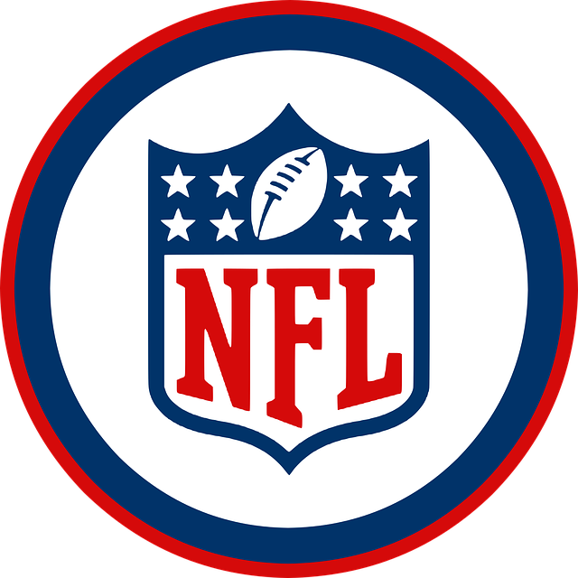

Hvad er NFL?
Rundt om sporten
 National Football League, forkortet NFL er den professionelle liga for amerikansk fodbold i USA. NFL er opdelt i to ligeværdige konferencer: AFC og NFC, som begge består af 16 hold fordelt rundt i USA. Disse konferencer er hver opdelt i fire divisioner: nord, syd øst og vest. I august spiller holdene fire træningskampe som opvarmning til sæsonen hvilket kaldes Pre Season. Efterfølgende spilles den regulære sæson (Regular Season) som er på 17 runder fra september til december. Alle hold spiller 16 kampe, og sidder over én runde. I januar er der slutspil hvor de otte divisionsvindere samt de to bedste af de resterende hold i hver konference mødes. De to bedste divisionsvindere fra hver konference sidder over i første runde af slutspillet, som kaldes "Wild card Weekend". Den efterfølgende uge spiller de resterende fire hold i hver konference imod hinanden i "Divisional playoffs". Vinderne af disse kampe mødes i to finaler, én i hver konference. Disse kampe kaldes "Conference Championships", og der er meget prestige i at vinde disse mesterskaber, men de er blot sidste skridt på vejen til alle drømmes søndag, hvor finalen for hele NFL spilles: Super Bowl.
Muffins
Amerikansk fodbold (også kaldet amerikansk/American football, europæisk fodbold hedder soccer i USA) er en sportsgren videreudviklet fra rugby. Spillet går ud på at løbe eller gribe bolden inden for modstanderens målfelt eller sparke bolden i modstanderens mål. I modsætning til almindelig fodbold dribles der ikke med fødderne. I stedet føres bolden frem af banen, enten ved at blive båret eller kastet og grebet. Det er tilladt at tackle ind på kroppen. Bolden er aflang og egner sig derfor bedre til kast end til at trille på jorden. Sporten har størst udbredelse i Nordamerika, hvor NFL-ligaen tiltrækker de bedste spillere. En enkelt dansker, Morten Andersen har gjort sig bemærket som kicker på nogle af de bedste hold. I USA er kvinderne organiseret inden for Lingerie Football League (LFL), der tog sin officielle begyndelse i 2004 under navnet Lingerie Bowl, som et underholdende indslag i pausen af Super Bowl XXXVIII. Succesen var så stor, at man 2009 lancerede en officiel kvindeliga med 10 hold fra hele USA. I Danmark har sporten siden 2000 været i fremgang, og der er kommet mange nye klubber og nye spillere til sporten. I 2017 var der mere end 4.200 aktive spillere fordelt på 63 klubber. Turneringerne arrangeres af Dansk Amerikansk Fodbold Forbund (DAFF). Der spilles med 11 spillere på banen fra hvert hold i de øverste ligaer, 9 i de lavere ligaer. På U-12, U-14 og U-16 spiller man 7-mands, og på U-16 kan man også spille 9-mands.